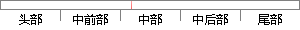

2、 method：连接方式，可选参数有GET、POST、PUT、DELETE等；
片段位置图

相似结果|
相似片段 1：；resource是要访问的资源；method是访问资源的方法（GET，POST，PUT，DELETE）；session是客户端会话的信息；params是访问接口必要的参数；callback是回调接口。接
相似片段 2：是我们常用的，但是PUT和DELETE方法却很少见。由于目前流行的Web浏览器大多不支持PUT和DELETE方法，所以Rails采用一个虚拟的：method参数来模拟HTTP中的GET、POST、PUT
相似片段 3：中的参数解释如下所示：>Method，该参数用于指定H，IvrP的请求方法。有五种方法：get、post、head、put、delete，get和post方法最为常用。>URL，该参数用于指定HTTP
|
※ 片段修改建议 ※
近似词参考：- 连接：毗连 毗邻
- 方式：体例 体式格局 方法
系统自动生成语句：2、 method：毗连体例，可选参数有GET、POST、PUT、DELETE等；
注：本片段修改建议为系统自动生成，仅供参考。